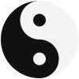

Wir haben eine Miniatur-Demo von KeyPilot mit zwei Tastenaktionen zusammengestellt. Fahren Sie über einen Link und drücken Sie F, um ihn zu öffnen. Drücken Sie D, um zurückzugehen.
Diese Demo ist für den Desktop gedacht, wo Sie Maus und Tastatur zusammen nutzen können.
QWERTZ
ASZURÜCKDÖFFNENFGHJ
YXCVB
hafenkurier.paper
Hafennachrichten
Hafen-Kurier
Die Hafenlichter kehren dieses Wochenende zurückAbendspaziergänge an der Pier wieder geöffnetÜber den Kurier
Die Hafenlichter kehren dieses Wochenende an die Hafenpromenade zurück
Die letzten Leuchten an Pier 4 sind fertig. Die zweijährige Sanierung ist abgeschlossen.
Abendspaziergänge öffnen nach der Dämmerung wieder. Die Marktstände bleiben eine Stunde länger offen.
Lesen: Abendspaziergänge an der Pier wieder geöffnet
Abendspaziergänge an der Pier wieder geöffnet
Die Promenade ist nach Sonnenuntergang wieder offen, mit extra Licht an Pier 4.
Die Läden am Hafen rechnen mit einem belebten Herbstwochenende.
Über den Kurier
Der Hafen-Kurier berichtet seit 1876 von Elbe und Alster.
Diese Miniaturzeitung ist zum Ausprobieren der Tasten F und D in KeyPilot da.
DIE TASTATUR
Tastaturreferenz
KeyPilot bietet ein vollständiges Layout mit Tastenaktionen. Unten sehen Sie eine Nachbildung des Tastaturreferenzfensters, das Sie während der Nutzung des Programms geöffnet lassen können. Fahren Sie über eine Taste, um zu sehen, was sie im Standard-Browsing-Layout tut.
Zwei Beispieltasten
Hier sind zwei Beispieltasten, die den Nutzen von Tastenklicks zeigen.
ZUFÄLLIGES LESEZEICHEN,
Zufälliges Lesezeichen
Die meisten Menschen vergessen ihre Lesezeichen. Zufälliges Lesezeichen macht sie wieder nützlich: Eine Taste drücken, und KeyPilot öffnet eine zufällig gespeicherte Seite. Sie können auch mehrere zufällige Lesezeichen auf einmal öffnen. So entdecken Sie Seiten bequem wieder.
SOCIAL MEDIA.
Open URLs: Social Media
Sie können eine eigene Open-URLs-Taste mit beliebigen Websites anlegen. Mitgeliefert ist eine Standardtaste, Social Media, die fünf große Social-Media-Websites gemeinsam in Tabs öffnet. Mit einem Tastendruck kann eine Open-URLs-Taste bis zu 30 URLs gleichzeitig in eigenen Tabs öffnen.
AUF DER SEITE
KeyPilot im Einsatz
Surfen Sie mit Tastenklicks im Web.Eine Vielzahl von Aktionen immer griffbereit.Erstellen Sie ein Tastaturlayout für Ihren Arbeitsablauf.Nach der Installation erscheint eine Einführung.Rechtsklick steuert KeyPilot jederzeit, wenn nötig.
BIMODALE STEUERUNG
Bimodale Steuerung / Dual-Input (UI-Theorie)
Die Gitarre als Einführung in die bimodale Steuerung von Software
Betrachten Sie, wie die Gitarre als Instrument existiert. Den Händen sind getrennte Aufgaben zugewiesen.
Die linke Hand navigiert zur Note und bereitet sie zum Spielen vor.
Sie bewegt sich über das Griffbrett, bevor sie die Saite(n) herunterdrückt.
Die rechte Hand löst den Klang der Note aus
Sie hält das Plektrum und schlägt die Saite(n) im richtigen Timing an.
Die beiden Tätigkeiten sind voneinander abhängig. Damit die Note erklingt, muss sie von der linken Hand vorbereitet werden. Die linke Hand ist auf die rechte angewiesen, die Note zu spielen — sonst bleibt sie stumm.

Die Maus
Noctivagous erklärt, dass die Steuerung von Desktop-Software durch die Maus denselben Prinzipien folgen sollte. So wie die Maus heute verwendet wird, legt sie dem Nutzer zu viel kognitive Last auf, indem sie 1) das Steuern (Bewegen des Cursors) und 2) das Auslösen von Funktionen (Anklicken) in einem einzigen Gerät und an einem einzigen Ort vereint. All das wird einer Hand zugewiesen.
Macht man diese Rollen deutlich und trennt sie in zwei Eingabeorte, die beide Hände nutzen, hat der Nutzer mehr Kontrolle über Software. Das Trackpad kann zum Beispiel weiterhin den Cursor steuern, während die „Klicks“ woanders stattfinden — erstmals von der anderen Hand gesteuert. Es entsteht eine ganz andere Softwaredynamik, wie die Demo oben zeigt. Für Softwareentwickler öffnen sich neue Möglichkeiten in der UI-Theorie.
Wichtig ist: Nur eine Person hat die Maus 1968 erdacht, Douglas Engelbart, und sie ist seither unverändert geblieben. Ihre Einführung war damals ein Fortschritt für den Personal Computer, aber Jahrzehnte später ist sie in vielen Fällen eine mühsame, ermüdende Art, mit einem Computer zu arbeiten. Touchscreen-Tablets haben sie nicht überflüssig gemacht. Zum einen ist das direkte Berühren eines Objekts auf dem Bildschirm nicht präzise. Bei beiden Interaktionsstilen mit dem Computer gibt es viel Raum für Verbesserung, und beide können von der Theorie der bimodalen Steuerung / Dual-Input profitieren.
Die Erweiterung existiert, um eine UI-Theorie zu vertreten, die wir bimodale Steuerung nennen. Steuern Sie den Cursor wie bisher mit der Maus, lösen Sie Aktionen aber mit Tasten aus statt mit Maustasten. Fahren Sie über einen Link und drücken Sie F, um ihn anzuklicken, oder G, um ihn in einem neuen Hintergrundtab zu öffnen. Das ist schnell. Es heißt Key-Klick.
Neben F gibt es zahlreiche weitere Tastenaktionen. Genau darin liegt die Stärke von KeyPilot: ein Tastaturlayout mit vielen Key-Klick-Funktionen, anpassbar im eingebauten Layout-Config-Editor. Kostenlos und unter der MIT-Lizenz.
Die Key-Klick-Animation auf dieser Seite zeigt die Geste: mit der Maus zeigen, F zum Öffnen, dann D zum Zurückgehen.